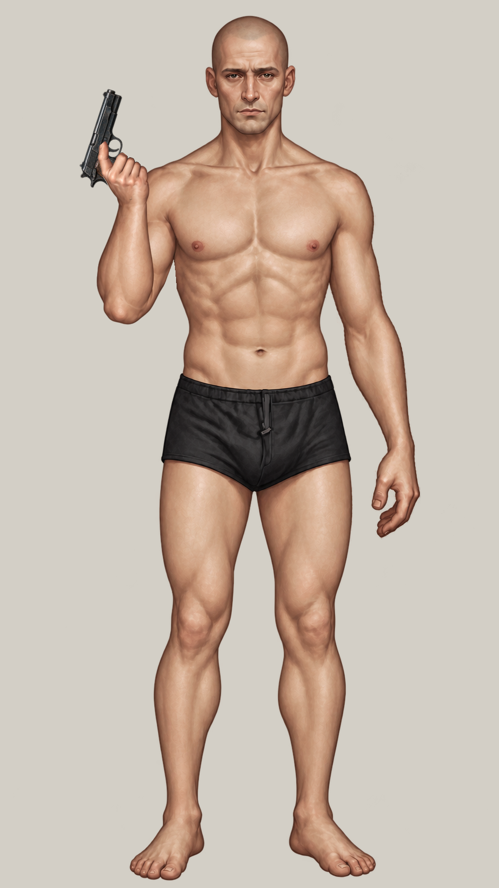
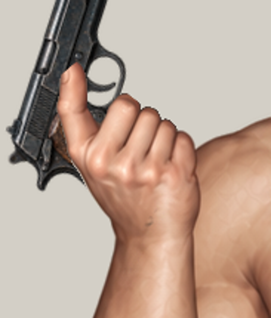
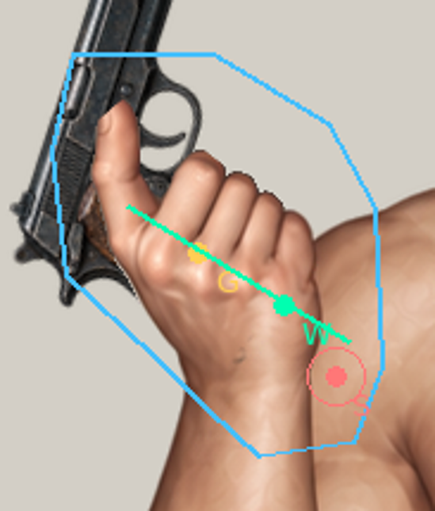
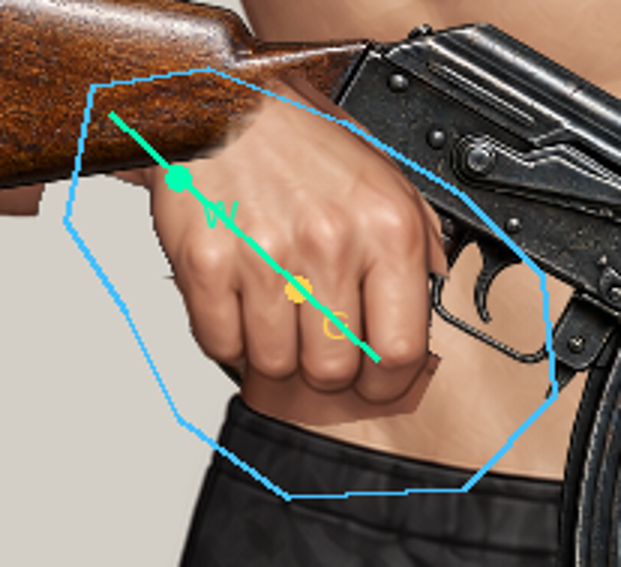
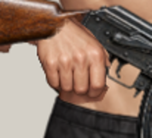
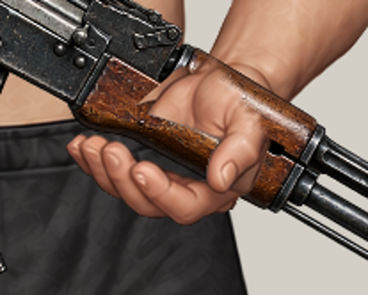
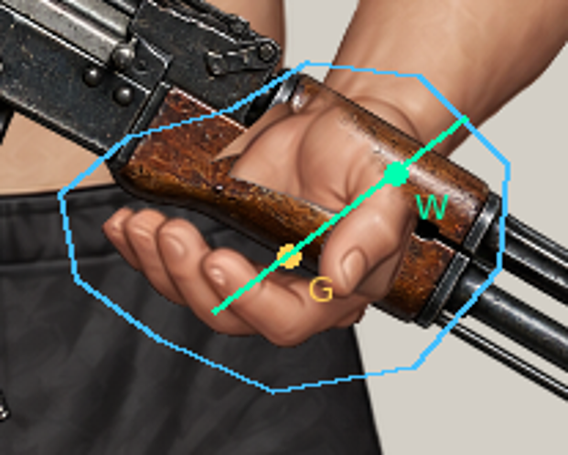
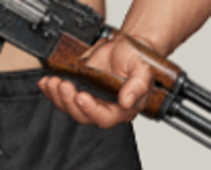
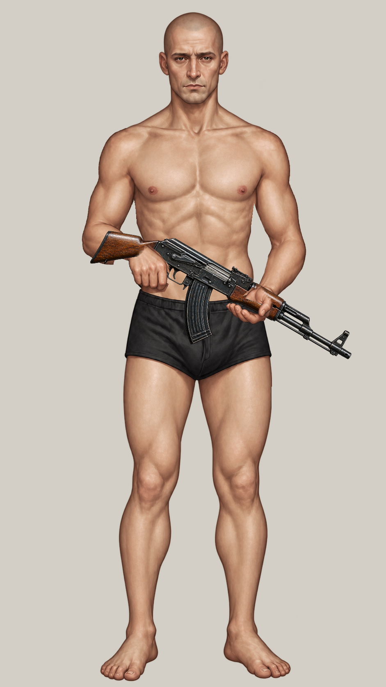

Нові кисті не намальовані й не інтегровані. Це запасний шлях за пунктом7 завдання: точні робочі маски, порожні шаблони, реальні референси та прив’язки. Поточні кулаки/хвати тут показані як проблемне джерело. Зображень «ПІСЛЯ» немає.
Чинний Avatar Lab · Технічний звіт та інструкція художнику · Повний машинний контракт
Перемикачі змінюють лише цей огляд. Шаблони не підключаються в гру. Бірюзовий контур показує зовнішню робочу область; фактична маска виключає захищені ділянки плеча й ліктя. W — wrist, G — grip, S — shoulder, E — elbow. Червоні круги захищені. Координати в таблиці та anchors.json — точні.
Порожні candidate-back/front/thumb.png — завдання для художника,0 пікселів нового малюнка. Перед/зад нового великого пальця визначається художником за контактною поверхнею.
| Кисть | Зап’ястя X,Y | Хват X,Y | Робочий bbox [x0,y0,x1,y1),px |
|---|---|---|---|
| pistol-right | 265.763742, 352.021688 | 230.000000, 330.000000 | [168, 246, 307, 417] |
| rifle-right | 324.000000, 631.000000 | 364.000000, 668.000000 | [286, 594, 449, 739] |
| rifle-left | 658.000000, 725.000000 | 619.000000, 755.000000 | [536, 684, 699, 806] |
ДО / чинний стан; нової художньої версії ще немає.


Матриці й координати · Робоча маска941×1672 · Вага стику зап’ястя
ДО / чинний стан; нової художньої версії ще немає.

Матриці й координати · Робоча маска941×1672 · Вага стику зап’ястя

ДО / чинний стан; нової художньої версії ще немає.


Матриці й координати · Робоча маска941×1672 · Вага стику зап’ястя


